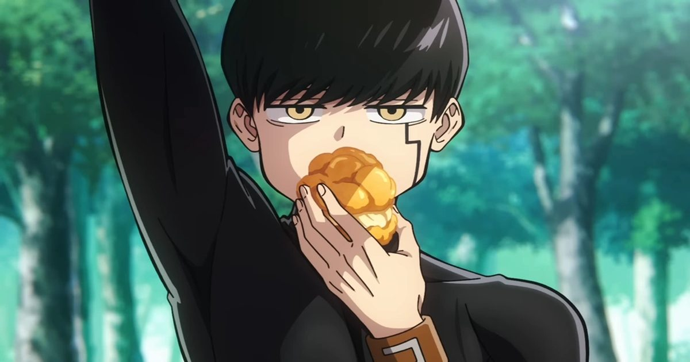

2026-11-14 · 新番前瞻

11 月 11 日，Aniplex 公布了《肌肉魔法使-MASHLE-》第三季的首支完整 PV 与主视觉， 定档 2027 年 1 月 9 日开播，并同步宣布斉藤壮马、鈴木崚汰加盟， 饰演瓦尔基斯魔法学校的两名新对手。第三季的官方标题也终于落定—— 「三魔对争·神觉者最终试验篇」。多数报道会把重点放在「定档 + 新声优」上， 但这季真正值得聊的是标题本身：一个把篇章名直接写进季名的决定， 加上一个很多观众还没意识到的事实——原作漫画已于 2023 年 7 月完结（全 18 卷）， 第三季改编的最终试验篇是全作倒数第二个大篇章。看完第三季， 动画离终点就只剩最后一场决战了。这改变了我们该用什么心态去看这季。
先把公布内容钉齐：第三季全称《肌肉魔法使-MASHLE- 三魔对争·神觉者最终试验篇》， 2027 年 1 月 9 日 24:00 起于 TOKYO MX、BS11 等台开播，各地面波台最迟 1 月 15 日跟进； 日本国内 ABEMA、d アニメストア等平台同步，海外由 Crunchyroll 全球配信（日本、中国大陆除外）。 新加盟两名角色：斉藤壮马饰多米娜·布洛维夫（Domina Blowelive）， 鈴木崚汰饰雷维斯·罗泽库尔茨（Lévis Rosequartz）——两人都来自瓦尔基斯魔法学校， 是挡在马修「神觉者」之路上的新对手，而多米娜还有一个更敏感的身份我们后面再说。 主役五人（小林千晃、川島零士、石川界能、江口拓也、上田麗奈）全员回归， 制作继续由 A-1 Pictures 担纲，系列构成仍是黑田洋介。
播前的动作也排得很满：12 月 13 日六本木ヒルズ TOHO 影城办先行上映会， 七名声优登台两场舞台挨拶，eplus 抽票11 月 29 日 23:59 截止， 票价 4,000–7,200 日元。换句话说，如果你在 11 月中旬看到这篇文章， 离抽票截止还有大约两周——想抢先行场，现在就得动手。
第一季叫《肌肉魔法使-MASHLE-》，第二季叫《神觉者候补选考试验篇》， 到第三季，标题膨胀成了「三魔对争·神觉者最终试验篇」—— 一季的名字里塞进了赛事名（三魔对争）+ 赛事性质（最终试验）+ 篇章定位。 这种精确不是官方的命名强迫症，而是一种进度条公示： 三所顶尖魔法学校的精英齐聚一堂，赢家直接获得「神觉者」头衔—— 这在原作结构里就是马修故事的最后一场「考试」。
对应漫画，这个篇章大约覆盖第 75–102 话，约 28 话的体量， 是全作倒数第二个大篇章。第二季结束时（神觉者候补考试 + 伊诺森特零袭击东顿学院）， 马修「无魔力者」的身份已经公开，落选即处刑的赌注已经摆上桌—— 所以第三季的「最终试验」不是普通的学年活动，而是一场输了会被处刑的生存考试。 PV 里新对手逐一亮相、主视觉把瓦尔基斯的深色制服学生排在马修一行人对面， 官方宣传语也点明了「新刺客们正在行动」——考试与刺杀并行，是这季的叙事引擎。
而多米娜的身份是这季埋得最深的一根线：他是反派伊诺森特零（Innocent Zero）的六子之一。 第二季结尾已经揭露马修本人也是这六子之一——也就是说，第三季的「考试对手」名单里， 混着马修的亲兄弟。 tournament（比赛）+ 家庭剧（兄弟相残）+ 处刑倒计时三线并行， 这也是为什么原作粉丝普遍认为最终试验篇是全作战斗密度最高的篇章。
原作漫画 2020 年 1 月至 2023 年 7 月在周刊少年 Jump 连载，全 18 卷完结， 全球累计发行超过 1200 万部。完结作改编动画有个天然优势：终点可见。 最终试验篇之后，漫画只剩最后一个大篇章——Eclipse 篇（约第 103–162 话）， 内容是马修与生父伊诺森特零的最终决战。换句话说，第三季播完， 观众心里应该很清楚：要么有第四季收尾，要么以剧场版收尾，总之终点就在下一个路口。
这种「进度条透明」会实质性地改变观看策略。对追新番的观众来说， 现在入坑第三季是回报最高的时点：前两季共 24 集的补番成本低， 而第三季直接进入全作最高潮的赛事篇。对原作党来说，争论的焦点则变成 「28 话体量最终试验篇需要多少集来装」——前两季各 12 集、 每季大约覆盖 40–50 话的节奏（S2 从第 64 话附近讲到 78 话前后）， 照这个密度，28 话的三魔对争大概率也是 12 集左右，节奏上会把三校对抗赛的 团体赛压缩得更紧凑，单人战保留完整回合。
制作侧唯一的显性变更是人物设计换人：前两季的东岛久志离任， 由曾参与《我独自升级》作画的新人设师接棒。主视觉上五名阿德勒寮主角的脸, 与前两季的圆润感相比线条更利落——对一部以「面无表情吐槽脸」为招牌的喜剧来说， 人设微调是风险也是机会：利落的线条有利于高速战斗作画，但马修那张 「扑克脸吃泡芙」的表情包经济学能否延续，要看正片。
我们的观察：第二季真正出圈的不是正片，是 OP——Creepy Nuts 的 《Bling-Bang-Bang-Born》成了 2024 年的现象级歌曲，反过来给这部 「二线 Jump 作品」带来了远超漫画销量的人气。而本次公布里 OP/ED 仍未公布。 这是第三季最大的隐形压力：前季 OP 的起点太高，换了歌手怕冷场， 再请 Creepy Nuts 又难免「炒冷饭」的批评。先导物料把火力全部压在战斗 PV 上， 或许正说明官方自己也还没解决这个问题。
我们的观点：「考试」是这部作品最被低估的世界观表达。 马修要成为神觉者，表面理由是拿头衔，实际目的是让没有魔力的自己与爷爷 能在不被歧视的社会里活下去——一个体制内的弱者，用体制自己的游戏规则 （考试）从体制手里抢平等。三魔对争把这套逻辑推到极致： 当「肌肉」能通过魔法考试，考试制度本身的荒谬就暴露了。第三季作为 「最终试验」，等于是全作主题的终审开庭。这不是一个纯搞笑番的走法。
我们的案例对比：同为完结Jump作品的长篇改编，《炎炎消防队》 选择连季直冲完结（第三季分三部分播完），《肌肉魔法使》则保持了 一年一季的匀速——2023、2024、2027。空出两年意味着什么？ 大概率是在等原作人气沉淀 + 给 OP 选曲和歌手留谈判空间， 也可能与 A-1 的排期（同期有多个大项目）有关。坏处是热度断档： Bling-Bang-Bang-Born 的余温到 2027 年 1 月已经消耗了整整三年， 第三季几乎要靠正片质量重新冷启动。
我们的实验：我们做了一次简单的热度盘点：在 11 月 11 日 PV 公布后 24 小时内，日区 Trending 主要由「斉藤壮马」「MASHLE 3期」两个词条承接， 而海外社区讨论的高频问题不是剧情，而是两个——「Crunchyroll 会不会同步」 （会，全球除日本/中国大陆）和「一共几集」（官方未公布）。 一个完结作改编动画播前半年，观众最关心的仍是「追番成本」而非「剧透」， 这再次验证了完结改编的核心卖点是确定性。
我们的评分理由：给这个「播前节点」打 7.6 分：定档明确、班底稳定、 原作最终试验篇本身是全作密度最高的篇章，终点的可见性让这季几乎没有 「烂尾结构风险」；扣分在于 OP/ED 仍未公布（前季 OP 的标杆太高）、 人设换人带来的画风连续性风险，以及距离开播还有近两个月的营销空窗。 一句话总结：第三季是马修故事的「决赛圈」——看完它， 这部关于肌肉与魔法的喜剧就只剩最后一场父子决战了。1 月 9 日，准时开庭。